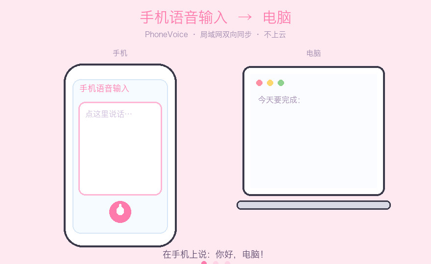

手机说话，文字直接打到电脑光标处；电脑复制，手机直接粘贴。
全程局域网 · 不上云 · 手机零安装（扫码即用）· Mac / Windows

用豆包、讯飞等输入法语音说话，文字自动出现在电脑光标处，不用再手动传。
电脑上复制文字，手机页面自动收到，点一下复制，直接去粘贴。
手机和电脑在局域网内直连，文字不出你家 WiFi，隐私更安心。
Mac（Apple 芯片 + Intel）和 Windows 都支持，代码完全开源。
是的，目前走局域网，需要同一网络；异地同步在规划中。
不会。语音识别由手机输入法完成，传输只在局域网内进行。
模拟键盘输入需要辅助功能权限；只授一次，之后更新不会再要求。